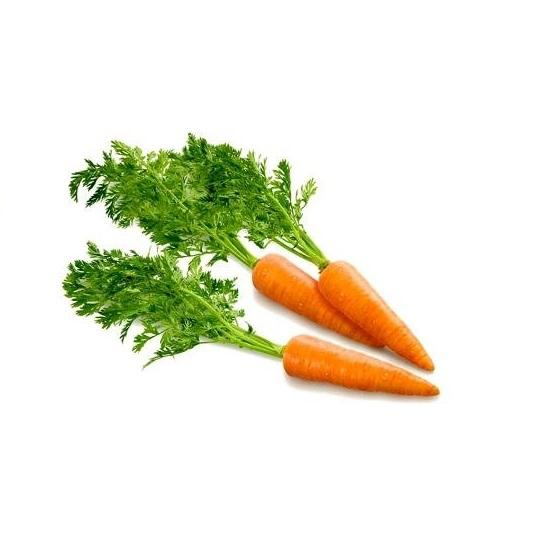
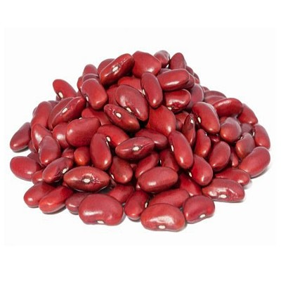
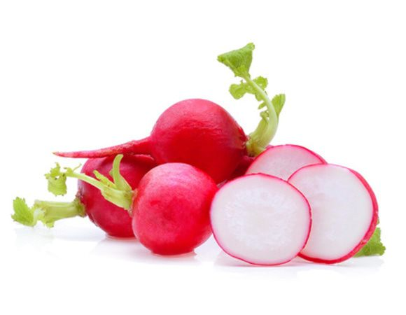
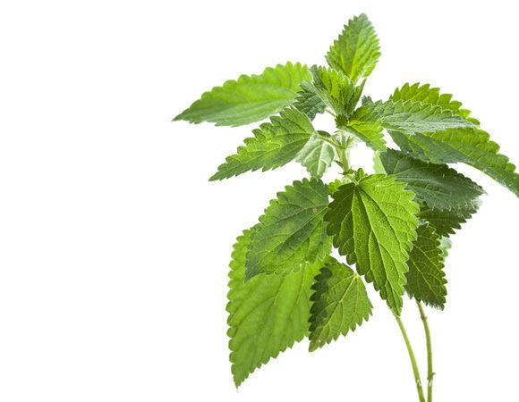
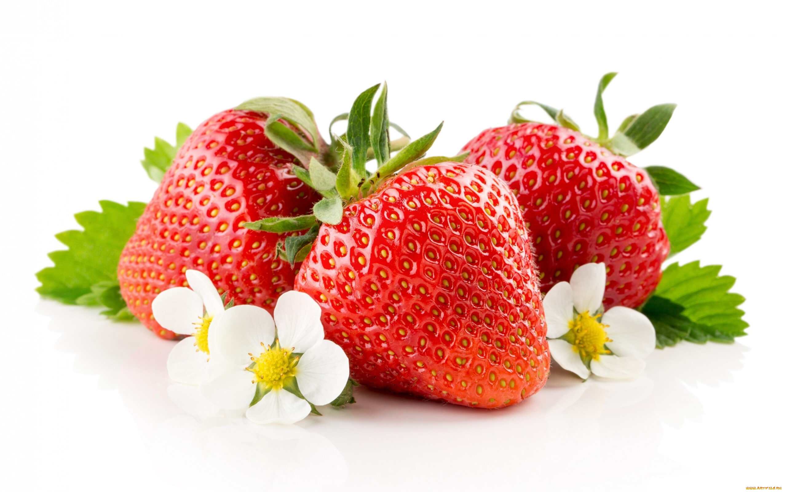
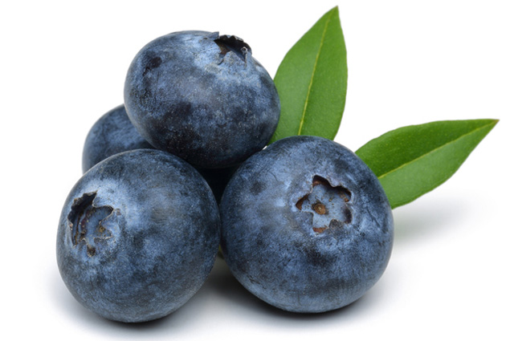

Картошка

Клубни картофеля являются важным пищевым продуктом. Плоды ядовиты в связи с
содержанием в них соланина.
Морковь

Культивируется на протяжении четырёх тысяч лет.
Фасоль

Типовой род растений семейства Бобовые (Fabaceae).
Редис

Однолетние или двулетние растения из рода Редька семейства Капустные. По
современной классификации в отдельный ботанический таксон не выделяется.
Горох

Во многих устаревших системах классификации растений род однолетних и
многолетних травянистых растений семейства бобовые (Fabaceae).
Крапива

Род цветковых растений семейства Крапивные. Стебли и листья растений этого рода
покрыты жгучими волосками, которые и дали латинское название: uro — «жгу».
Клубника

Название крупноплодных видов растений рода Земляника семейства Розовые, а также
их плодов. Название относится к землянике зелёной, землянике мускусной, землянике ананасной.
Черника

Низкорослый кустарничек, вид рода Вакциниум семейства Вересковые. Ягоды
съедобны для людей. Ягоды и листья используются в лекарственных целях. Чернику также
выращивают на альпийских горках.